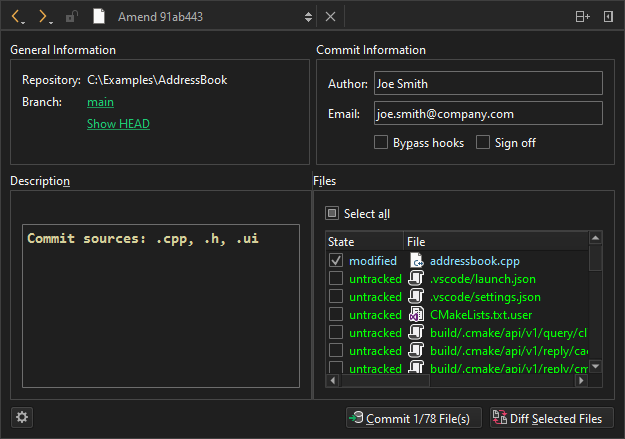

git am
To apply latest changes to the last commit, go to Tools > Git > Local Repository > Amend Last Commit.

To view the log of the current branch, select the branch name in Branch.
To view the commit in its current form before amending, select Show HEAD.
To view a diff of the changes in the selected files, select Diff Selected Files.
Select Commit to amend the commit.
Amend related commits
To amend an earlier comment in a series of related commits, select Tools > Git > Local Repository > Fixup Previous Commit. This operation uses interactive rebase. In case of conflicts, a merge tool is suggested.
See also How To: Use Git and Git.